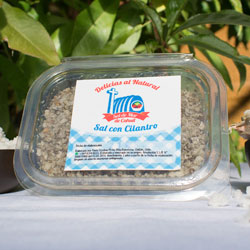

<div id="barba-wrapper"><div class="barba-container"><div class="button-box no-margin-top"><ul><li><a href="index.html">Mermeladas stevia</a></li><li><a href="mermeladas-azucar.html">Mermeladas azucar</a></li><li><a href="pastas.html">Pastas / Salsas</a></li><li id="active">Aliños</li><li><a href="conservas.html">Conservas</a></li></ul></div><div class="box no-margin-top" data-toggle="modal" data-target="#alino1"></div><div class="box no-margin-top" data-toggle="modal" data-target="#alino2"></div><div class="box" data-toggle="modal" data-target="#alino3"></div><div class="box" data-toggle="modal" data-target="#alino4"></div><div class="box" data-toggle="modal" data-target="#alino5"></div><div class="box" data-toggle="modal" data-target="#alino6"></div><div class="box" data-toggle="modal" data-target="#alino7"></div><div class="box" data-toggle="modal" data-target="#alino8"></div><div class="box no-margin-bottom" data-toggle="modal" data-target="#alino9"></div><div class="box no-margin-bottom" data-toggle="modal" data-target="#alino10"></div><div id="alino1" class="modal fade"><div class="modal-dialog" role="document"><div class="modal-content"><div class="modal-body"><div class="modal-txt"><div class="title">Sal de Mar.</div><div class="desc">Sal de mar de Cahuil.</div><div class="price">Precio: $1500 (150g.)</div></div></div></div></div></div><div id="alino2" class="modal fade"><div class="modal-dialog" role="document"><div class="modal-content"><div class="modal-body"><div class="modal-txt"><div class="title">Sal con Orégano.</div><div class="desc">Sal de mar de Cahuil.</div><div class="price">Precio: $1500 (150g.)</div></div></div></div></div></div><div id="alino3" class="modal fade"><div class="modal-dialog" role="document"><div class="modal-content"><div class="modal-body"><div class="modal-txt"><div class="title">Sal con Albahaca.</div><div class="desc">Sal de mar de Cahuil.</div><div class="price">Precio: $1500 (150g.)</div></div></div></div></div></div><div id="alino4" class="modal fade"><div class="modal-dialog" role="document"><div class="modal-content"><div class="modal-body"><div class="modal-txt"><div class="title">Sal con Merkén.</div><div class="desc">Sal de mar de Cahuil.</div><div class="price">Precio: $1500 (150g.)</div></div></div></div></div></div><div id="alino5" class="modal fade"><div class="modal-dialog" role="document"><div class="modal-content"><div class="modal-body"><div class="modal-txt"><div class="title">Chimichurri.</div><div class="desc">Sal de mar de Cahuil, ajo, comino, laurel, merkén, orégano, perejil y pimienta.</div><div class="price">Precio: $1500 (150g.)</div></div></div></div></div></div><div id="alino6" class="modal fade"><div class="modal-dialog" role="document"><div class="modal-content"><div class="modal-body"><div class="modal-txt"><div class="title">Sal con Cilantro.</div><div class="desc">Sal de mar de Cahuil.</div><div class="price">Precio: $1500 (150g.)</div></div></div></div></div></div><div id="alino7" class="modal fade"><div class="modal-dialog" role="document"><div class="modal-content"><div class="modal-body"><div class="modal-txt"><div class="title">Merkén con Avellanas.</div><div class="desc"></div><div class="price">Precio: $1500 (70g.)</div></div></div></div></div></div><div id="alino8" class="modal fade"><div class="modal-dialog" role="document"><div class="modal-content"><div class="modal-body"><div class="modal-txt"><div class="title">Merkén Mapuche.</div><div class="desc">Sal, ajo, cilantro, chascuo y albahaca.</div><div class="price">Precio: $1500 (70g.)</div></div></div></div></div></div><div id="alino9" class="modal fade"><div class="modal-dialog" role="document"><div class="modal-content"><div class="modal-body"><div class="modal-txt"><div class="title">Merkén Ahumado sin Sal</div><div class="desc">Con ajo, cilantro, chascuo y albahaca</div><div class="price">Precio: $1500 (70g.)</div></div></div></div></div></div><div id="alino10" class="modal fade"><div class="modal-dialog" role="document"><div class="modal-content"><div class="modal-body"><div class="modal-txt"><div class="title">Merkén Tostado.</div><div class="desc"></div><div class="price">Precio: $1500 (70g.)</div></div></div></div></div></div></div><!-- End of barba container --></div><!-- End of barba-wrapper -->